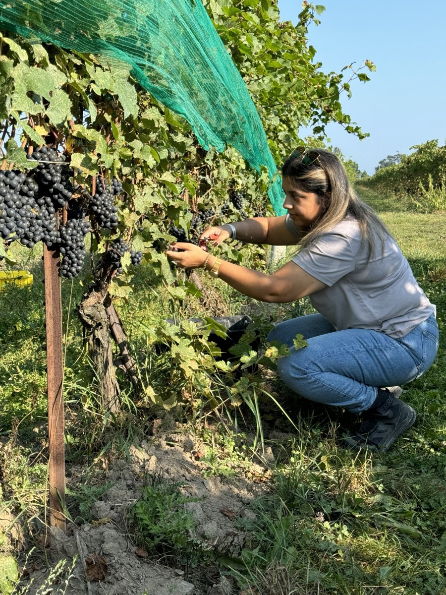

Welcome to the Mander journey.
To enter and explore our very first vintage, please confirm you are of legal drinking age in your Province or Country.
Mander Wines supports responsible enjoyment.
Please enjoy intentionally.
Sorry, you must be of legal drinking age to visit this site.

Mander Wines was born from a first-generation Canadian's dream to bridge heritage and terroir — handcrafting wines that honour both where she comes from and the land that raised her.
Rooted in Ontario's finest appellations — from Lincoln Lakeshore to Niagara-on-the-Lake. Every grape is handpicked from vineyards we know by name.
No shortcuts. No synthetics. Canada Organic certified from vine to bottle — because premium wine starts with what you leave out.
Small-batch by design, not by accident. Every bottle is numbered. When it's gone, it's gone. This isn't mass production — it's intention.
You're not just buying wine — you're getting in at the beginning. The inaugural 2024 release marks the start of something that won't stay small for long.

As a first-generation Ontarian, Jasneet Mander felt the pull of two worlds — one rooted in the rich traditions of her family, and the other shaped by the vibrant culture of her home.
Mander Wines is the bridge between those worlds: a personal journey turned into something you can taste in every glass.
Read the Full StoryVibrant cherry, strawberry, and soft spice. Aged 10 months in French oak. Handpicked. Organic. Only 100 cases will ever exist.